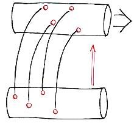

Induction

Technique
- Observe pairs, conjecture implication, prove as theorem
- Examples
- Prime numbers include 3, 7, 11, 13, 19, 23, ...
- All primes are odd
- Whoops ... all primes greater than 2 are odd
Advantages
- External stimulation
- Possibility of automatic reparation
Disadvantages
- Unsound: Conjecture may be disproved, may need correction
- Failure to disprove may lead to folklore